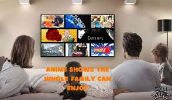
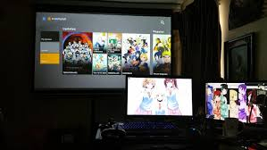
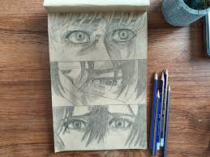

What is Anime?
Anime is a style of animated entertainment that started in Japan and has become popular around the world. It includes many different genres such as action, romance, comedy, fantasy, and sports. One reason I enjoy anime is because there is always something new to watch and every series has its own story and art style.
For me, anime is more than just watching shows. It is a hobby that helps me relax, have fun, and even get inspired creatively. Some anime focus on friendship, hard work, and personal growth which makes them enjoyable and meaningful at the same time.
Who Enjoys Anime?
Anime is enjoyed by many different kinds of people. Kids, teens, and adults can all find anime series they like because there are many genres and topics. Some people enjoy anime for entertainment while others enjoy the art style and storytelling.
- Students who want something fun to watch
- Artists who like animation and character design
- People who enjoy creative storytelling

When is the Best Time for Anime?
The best time to enjoy anime depends on the person. Many people watch anime at night after finishing homework or work. Watching a few episodes can be a good way to relax after a long day.
| Time | Why It Works Well |
|---|---|
| After school | A good way to relax and take a break |
| Weekend afternoons | Good for watching several episodes |
| At night | A calm time to focus on the story |

Where Can You Watch Anime?
Anime can be watched in many places. Most people watch it at home on a laptop, TV, tablet, or phone. Home is a comfortable place where people can relax and enjoy the show.
Some people also watch anime with friends or at conventions where fans gather to talk about their favorite series.
How Do You Get Started with Anime?
Getting started with anime is simple. First choose a genre that sounds interesting such as action, fantasy, romance, or comedy. Then find a streaming platform that offers anime series.
Why I Enjoy Anime
I enjoy anime because it is entertaining, creative, and has many different types of stories. Some series are funny while others are emotional or action packed.
The art styles and storytelling make anime unique. It can also inspire creativity and introduce viewers to new cultures and ideas.

AI Prompts
AI Model Used: ChatGPT
AI was only used to help review and double check the structure of my HTML and CSS to make sure the page followed the assignment instructions.
- Review my hobby website HTML code and confirm that my structure and styling follow the assignment requirements.